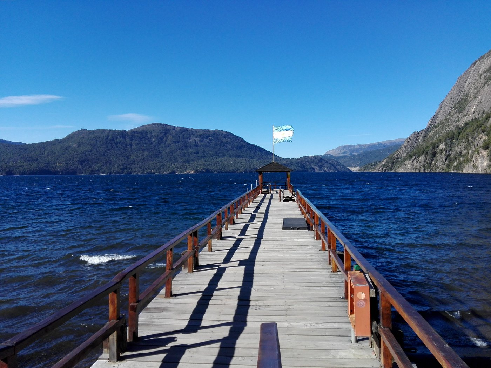

¡Bienvenido a San Martín de los Andes!
Donde los sueños se convierten en paisajes
Sumérgete en la belleza natural y la serenidad de uno de los destinos más cautivadores de la Patagonia argentina.
Siuado en Neuquén, junto al lago Lácar y rodeado de la majestuosa cordillera de los Andes, este paraíso montañoso ofrece paisajes impresionantes, actividades al aire libre y un encantador ambiente alpino.
¿Cuál será tu próxima excursión?


